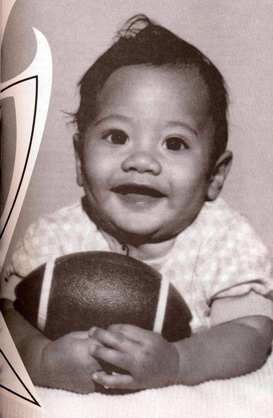

WikiRock
Кто такой Дуейн Джонсон/Скала?
Дуэ́йн Ду́глас Джо́нсон (англ. Dwayne Douglas Johnson; род. 2 мая 1972 года, Хейвард, США) — американский киноактёр, предприниматель, музыкант, певец, в прошлом — рестлер. Известен под псевдонимом Скала́ (англ. The Rock).
Его считают одним из величайших рестлеров всех времён, до начала актёрской карьеры он восемь лет выступал в WWE. Его фильмы собрали более 3,5 миллиардов долларов в Северной Америке и более 10,5 миллиардов долларов по всему миру, что делает его одним из самых кассовых и высокооплачиваемых актёров в мире.
В 2000 году Джонсон написал автобиографическую книгу «Скала говорит», которая дебютировала на первом месте в списке бестселлеров New York Times. С 2001 года он начал сниматься в кино, а в 2002 году исполнил главную роль в фильме «Царь скорпионов». Его гонорар в 5,5 миллионов долларов был занесён в Книгу рекордов Гиннесса как наивысший гонорар за первую главную роль.
В августе 2018 года Джонсон занял второе место в рейтинге самых высокооплачиваемых актёров года по версии журнала Forbes. За 12 месяцев он заработал $124 млн. В августе 2019 года Джонсон занял первое место в рейтинге самых высокооплачиваемых актёров года по версии журнала Forbes. За 12 месяцев он заработал $89,4 млн. В 2016 и 2019 годах Джонсон был назван журналом Time одним из самых влиятельных людей мира. В 2020 году стал совладельцем лиги американского футбола XFL.
Ранняя жизнь Скалы
Родился 2 мая 1972 года в Хейварде, Калифорния в семье известного рестлера Рокки Джонсона (1944—2020) и промоутера Аты Майвиа. Семья матери имеет полинезийское происхождение и происходит с островов Самоа, отец происходит из чёрных новошотландцев. Дед по материнской линии «Верховный вождь» Питер Майвия также был рестлером, а бабушка Лиа Майвиа с 1982 по 1988 год руководила рестлинг-промоушном Polynesian Pacific Pro Wrestling. В детстве некоторое время жил в новозеландском Окленде с семьёй матери. В Окленде Дуэйн посещал начальную школу «Ричмонд Роад», позже переехал в Гонолулу, где проучился до 11 класса в старшей школе имени президента Уильяма Мак-Кинли.
Перед 11 классом родители переехали в Бетлехем, Пенсильвания, где посещал старшую школу «Бетлехем Фридом». Здесь он стал играть за школьную команду в американский футбол, а также был членом школьной команды по лёгкой атлетике и борьбе[24]. По окончании школы многие университеты предлагали ему поступить к ним, и Джонсон выбрал Университет Майами, который предложил ему стипендию, включающую полное содержание. Джонсон производил хорошее впечатление на тренеров и товарищей по команде и считался одним из перспективных игроков. Однако, в то же время в «Майами Харрикейнс» пришёл Уоррен Сэпп — будущая звезда НФЛ, который играл на той же позиции, что и Джонсон. За четыре года в «Харрикейнс» Джонсон вышел на поле в 39 играх, из которых всего в одной в стартовом составе. В 1991 году он вместе с футбольной командой стал победителем национального чемпионата NCAA.
Джонсон окончил обучение в университете в 1995 году, получив степень бакалавра по криминологии и психологии. По окончании университета он подписал трёхлетний контракт с командой «Калгари Стампидерс» из Канадской футбольной лиги, но, отыграв всего сезон, получил травму спины и вынужден был окончить карьеру футболиста.
Ранняя карьера (1996)

После окончания футбольной карьеры Джонсон решил начать карьеру рестлера. В 1996 году ветеран рестлинга Пат Паттерсон устроил Джонсону несколько пробных матчей в World Wrestling Federation (WWF). Под своим настоящим именем он победил Бруклинского Броулера на домашнем шоу 10 марта и проиграл матчи Крису Кандидо и Оуэну Харту. После выступлений в United States Wrestling Association Джерри Лоулера под именем Флекс Кавана, где он дважды выиграл титул командных чемпионов мира USWA с Бартом Сойером, Джонсон подписал контракт с WWF. Он прошёл дополнительную подготовку у Тома Причарда, вместе с Ахимом Альбрехтом и Марком Генри.
Дебют (1996—1997)
Джонсон дебютировал в World Wrestling Federation в 1996 году под именем Рокки Майвиа. Сценическое имя было составлено из имён его отца и деда и вначале Джонсону не очень нравилась эта идея, но глава WWF Винс Макмэн и комментатор Джим Росс смогли переубедить его. Руководство WWF начало играть на связи Джонсона с отцом и дедом, называя его первым в истории компании рестлером в третьем поколении.
С самого дебюта WWF начали продвигать Джонсона, отыгрывающего роль фейса, несмотря на недостаток у него опыта в рестлинге. Джонсон дебютировал на ринге в ноябре 1996 года во время PPV-шоу Survivor Series, где в командном поединке на выбывание он остался последним и стал победителем. Уже после трёх месяцев в компании 13 февраля 1997 года он выиграл титул интерконтинентального чемпиона WWF, победив Хантера Хёрст Хелмсли. Однако болельщики вскоре устали от однотипного хорошего персонажа, во многом из-за набирающего в то время популярности Стива Остина. В результате во время его поединков болельщики выкрикивали «Умри, Рокки, умри!» и «Рокки — отстой!».